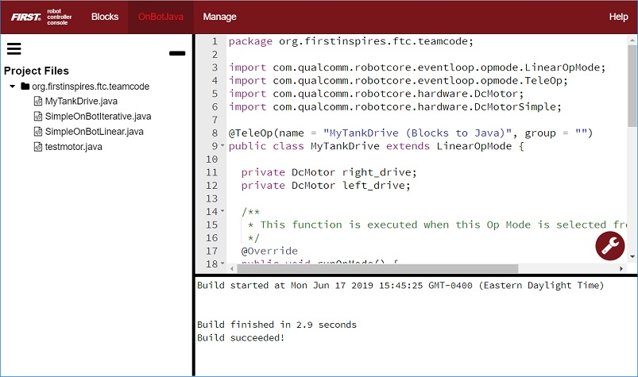
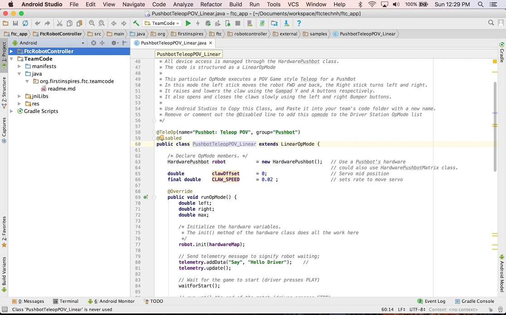
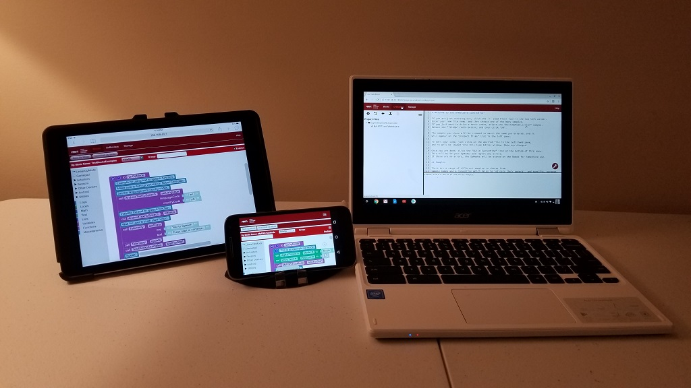

Choosing a Programming Tool
You need to select a programming tool to be able to create op modes for your competition robot. An Op Mode or Operational Mode is program that tells the robot what to do. There are three programming tools that are available for you to use.
FIRST strongly recommends that all users begin by learning how to use the Blocks programming tool.
The Blocks Programming Tool
A visual programming tool that lets programmers use a web browser to create, edit and save their op modes. This tool is recommended for novice programmers and for users who prefer to design their op modes visually, using a drag-and-drop interface.

The OnBot Java Programming Tool
A text-based programming tool that lets programmers use a web browser to create, edit and save their Java op modes. This tool is recommended for programmers who have basic to advanced Java skills and who would like to write text-based op modes.
Android Studio
An advanced integrated development environment for creating Android apps. This tool is the same tool that professional Android app developers use. Android Studio is only recommended for advanced users who have extensive Java programming experience.
Recommendations
Each tool has its own merits and weaknesses. For many users (especially rookies and novice programmers), the Blocks Programming Tool is the best overall tool to use. The Blocks Programming Tool is intuitive and easy-to-learn. It is the fastest way to get started programming your robot.
The OnBot Java Programming Tool is similar to the Blocks Programming Tool. However, OnBot Java is a text-based tool and it requires that the user have a sound understanding of the Java programming language.
It is important to note that with the Blocks Programming Tool and the OnBot Java Programming Tool, a user only needs a web browser to create, edit and build op modes for their robot. A user can even create, edit and build op modes using an iPad, an Android phone, or a Chromebook.
Android Studio is a powerful development tool. However, it requires extensive Java programming knowledge. It also needs a dedicated laptop to run the Android Studio software. Android Studio offers enhanced editing and debugging features that are not available on the OnBot Java Programming Tool. However, it is a more complicated tool and you must spend time learning how to use it. It is only recommended for advanced users.